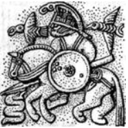
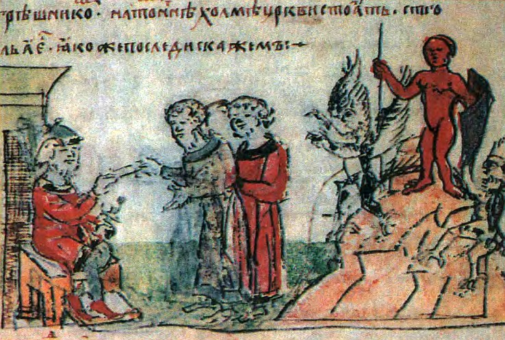

Текст цитаты, который
должен быть выровнен
по правому краю
Меридиан (Канал) — в традиционной китайской медицине система циркуляции жизненной энергии Ци, которая связывает между собой отделы центральной нервной системы, внутренние органы и поверхность кожи, на которой или в непосредственной близости под ней расположены биологически активные точки.
Список Меридианов представлен в таблице №1
Таблица 1
| Наименование Меридина |
инь/ян | стихии |
| Лёгких | большой инь | металл |
| Сердца | ян яркий | металл |
| Желудка | ян яркий | земля |
Первая ступень включает в себя настройки:
Вторая ступень включает в себя настройки:
Данная настройка позволяет связаться со скандинавскими Богами и получить присущие каждому из них качества, а также обрести их силу.
 Один - Бог знания, магии и сверхсознания. Бог войны, жизни и насильственной смерти. Творец человечества, Бог шаманов и странников. Один был одарен безумием воина в битве, безумием погруженного в экстаз провидца и безумием поэта. Бог мудрости и верховной власти. Мудрость Одина не ограничивается знанием тайных искусств, поскольку, принеся себя в жертву и обретя священные Руны, он владеет знаниями о судьбах мира. Связываясь с Одином, можно получить тайные знания о прошлом и будущем, приобрести силу, научиться влиять на жизненные ситуации. Помогает добиться успеха в учёбе, развивая интеллект, и в магии. Дарует творческое вдохновение и указывает путь личностного развития.
Больше всех других Богов, древние скандинавы почитали Одина, Тора и Фрейера. Кроме них чаще всего маги обращаются к Тюру, Фригг, Фрейе и Ньёрду и Идунн. Имена остальных северных Богов и Богинь также можно с успехом использовать в магической практике.